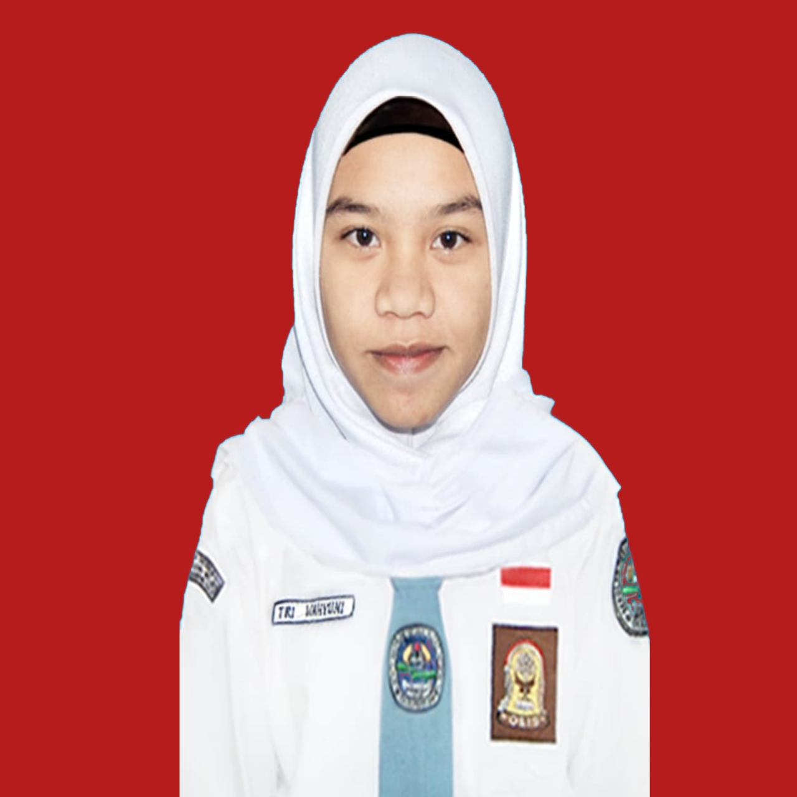

My Curriculum Vitae

Saya merupakan mahasiswi yang sedang menuntut ilmu di Universitas Pendidikan Indonesia pada prodi Sistem Informasi Kelautan, kampus daerah Serang.
Biodata Pribadi
- Nama: Tri Wahyuni
- Tempat Tanggal Lahir: Bandung, 30 September 2002
- Jenis Kelamin: Perempuan
- Agama: Islam
- Email: triwahyuni.upi.edu
- Instagram: https://www.instagram.com/triwahyuni.q
Riwayat Pendidikan
- SD: SDN Karya Jati
- SMP: SMPN 1 Cikalongwetan
- SMA: SMAN 1 Cikalongwetan
- S1: Universitas Pendidikan Indonesia
Organisasi
- 2020: Himpunan Siswa Siswi Pecinta Alam